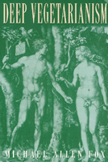

A compelling argument for a vegetarian lifestyle
A compelling argument for a vegetarian lifestyle


 A compelling argument for a vegetarian lifestyle
A compelling argument for a vegetarian lifestyle

|  |
Deep VegetarianismMichael Allen Foxpaper EAN: 978-1-56639-705-6 (ISBN: 1-56639-705-7) |
"Detailed, thorough, and wide-ranging, this is the most comprehensive, original work on philosophical vegetarianism to date. Deep Vegetarianism addresses the cultural, historical and philosophical backgrounds for vegetarianism, details the impact to vegetarianism on one's thinking and living, relates vegetarianism to recent defenses of the moral status of animals, and very ably considers all the significant arguments for and against vegetarianism."
—Evelyn B. Pluhar, author of Beyond Prejudice: The Moral Significance of Human and Nonhuman Animals
Challenging the basic assumptions of a meat-eating society, Deep Vegetarianism is a spirited and compelling defense of a vegetarian lifestyle. Considering all of the major arguments both for and against vegetarianism and the habits of meat-eaters, vegetarians, and vegans alike, Michael Allen Fox addresses vegetarianism's cultural, historical, and philosophical background, details vegetarianism's impact on one's living and thinking, and relates vegetarianism to classical and recent defenses of the moral status of animals.
Demonstrating how a vegetarian diet is related to our awareness of the world and our ethical outlook on life, Fox looks at the different kinds of vegetarian commitments people make and their reasons for making them. In chapters that address such issues as the experiences, emotions, and grounds that are part of choosing vegetarianism, Fox discusses not only good health, animal suffering, and the environmental impacts of meat production, but such issues as the meaning of food, world hunger, religion and spirituality, and, significantly, the links shared between vegetarianism and other human rights movements and ideologies, particularly feminism. In an extensive chapter that addresses arguments made by advocates of meat-eating, Fox speaks to claims of humans as natural carnivores, animals as replaceable, and vegetarians as anti-feminist. He also addresses arguments surrounding the eating habits of indigenous peoples, eating free-range animals, and carnivorous behavior among animals. The most complete examination of the vegetarian outlook to date, Deep Vegetarianism reveals the broad range of philosophical views that contribute to such a choice. It recognizes, and calls for, a conscious awareness of—and an individual responsibility to—the issues that exist in the moral, political, and social spheres of our existence.
With its lively and controversial discussion, Deep Vegetarianism promises to appeal to anyone looking to explore the relationship between dietary choice, lifestyle, the treatment of animals and the environment, and personal ethical responsibility. It will also be particularly useful for students and teachers of moral philosophy, ethics, religion, comparative cultures, ecology, and feminism.
Excerpt available at www.temple.edu/tempress
Read a review on vegparadise.com.
Read a review from Ethics, Volume 111.3 (April 2001), written by Sara Goering (pdf).
Series Foreword
Preface
Acknowledgments
1. A Historical-Philosophical Overview
Learning from the History of Vegetarianism •
Antiquity and the Special Case of Porphyry •
From Medieval Times to the Modern Era
2. You Are What You Eat (Almost): The Meaning of Food
Food Symbolism •
The Meaning of Meat •
Vegetarian Meanings
3. Compartmentalization of Thought and Feeling-and the Burden of Proof
The Compartmentalization Phenomenon •
Inconsistency •
Failing to See Connections •
A Brief Case Study: Environmental Ethicists and Meat-Eating •
Reversing the Burden of Proof
4. Vegetarian Outlooks
Types of Vegetarianism •
Experiences, Emotions, and Vegetarianism •
Grounds for Vegetarianism •
The Moral Status of Animals
5. Arguments for Vegetarianism: I
An Overview •
Good Health •
Animal Suffering and Death •
Impartiality, or Disinterested Moral Concern
6. Arguments for Vegetarianism: II
The Environmental Impact of Meat Production •
The Manipulation of Nature •
World Hunger and Injustice •
Interconnected Forms of Oppression •
Common Threads
7. Arguments for Vegetarianism: III
Wisdom Traditions and Modern Parallels •
Interspecies Kinship and Compassion •
Universal Nonviolence (Ahimsa) •
Earthdwelling: Native Peoples’ Spirituality •
Major Religions and Minority Voices •
Vegetarian Building Blocks
8. Arguments Against Vegetarianism
The Consequences of Vegetarianism •
Humans as Natural Carnivores •
Animals as Replaceable •
An Ecological Objection •
The Necessity of Killing •
A Feminist Critique of Vegetarianism •
Indigenous Peoples, Cultural Imperialism, and Meat-Eating •
Preventing Carnivorous Behavior in Nature •
Eating Shmoos and Other Consenting or Indifferent Animals •
Why Not Eat Free-Range Animals? •
The Requirement of Moral Sainthood •
Some Observations
9. Conscience and Change
The Vegetarian Conscience •
Vegetarianism or Veganism? •
New Directions and Creative Thinking •
A Way of Life
Notes
Select Bibliography
Index
Michael Allen Fox has authored and edited numerous books and is Professor of Philosophy at Queen's University in Kingston, Ontario. Once an outspoken advocate for animal experimentation, he has since repudiated that view and has published numerous articles in support of vegetarianism and animal rights.
General Interest
Philosophy and Ethics
Animals and Society
America in Transition: Radical Perspectives, edited by Gary L. Francione.
America in Transition: Radical Perspectives, edited by Gary L. Francione, presents radical interdisciplinary critiques of U.S. social institutions. The books included will analyze and interpret issues of class, race, gender, sexual orientation, ability, and species and suggest solutions for the problems they raise as we enter the twenty-first century.
© 2015 Temple University. All Rights Reserved. This page: http://www.temple.edu/tempress/titles/1399_reg.html.